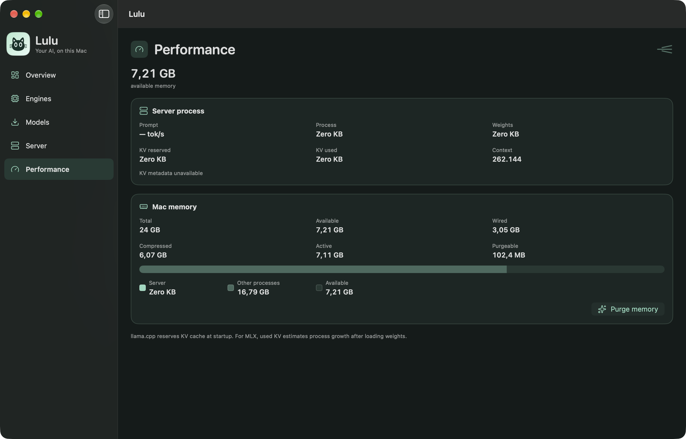

Find a model and run it.
Browse recommendations, download a model, and manage your library from one window.
FREE · OPEN SOURCE · MACOS
Put your Mac’s power to work. Download and run AI models, chat locally, or serve models through a local API. Lulu is free and open source.
Watch the demomacOS 14 or later · Latest release

Local chatNative Swift appMIT open sourceNotarized by AppleApple Silicon and Intel
SMALL BY DESIGN
Lulu runs models on your Mac and shows how much memory they use. Engines and models install separately, and model files live in ~/models/.
These measurements were taken with Lulu 2.0.21 on an Apple M4 with 24 GB of memory. Model memory depends on the model and context length.
FROM DOWNLOAD TO THE FIRST REQUEST


http://127.0.0.1:8000/v1 to use the local API.Choose a model, open chat, or copy the API address without opening the main window. Lulu can keep running after you close the window.


VIDEO · GETTING STARTED
Install an engine, download a model, and open a local chat.
Browse recommendations, download a model, and manage your library from one window.
Serve a downloaded model through an API that listens only on your Mac. Copy the endpoint from Lulu when you need it.
Open a chat in your browser and get responses from the model running on your Mac.
Purge stops the server, releases the model and asks macOS to free inactive memory. It needs an administrator password. The amount freed depends on the rest of the system.
See process memory, model weights, KV cache and context. Tokens per second show up when the engine reports them. Lulu shows a dash when a value is not available.
Prompts and responses stay on your Mac. Model search, downloads and engine installs use the network. The browser chat uses your local Lulu server.
MEMORY
See how fast your model is generating and how much unified memory your Mac is using. Lulu also shows the model’s memory footprint, context length, and estimated KV cache.
Free up memory with Purge. From the main window or menu bar, Purge stops the local server, unloads the model, and asks macOS to reclaim inactive memory. macOS requests administrator authorization. How much memory becomes available depends on the system.

PRIVACY
Models are in ~/models/mlx and ~/models/gguf. Sessions and logs are in ~/.lulu/. An optional model repository token and the server key are in macOS Keychain. The server listens on 127.0.0.1 only.
Lulu has no analytics and no crash reporter. The network is used when you search or download models, when you install an engine, and when you click Check for updates. Update checks run when you ask, without sending a system profile. Privacy.
FAQ
Yes. Lulu is free and open source under the MIT license. There is no account and no purchase in the app.
Lulu is a native Mac app with a local web chat. Engines install separately from the Engines screen, and models take the space they need. On the Mac measured above, the app bundle is 6.5 MB on disk and the idle footprint is 66 MB. That does not include a model.
Apple Silicon supports MLX and GGUF. Intel Macs support GGUF.
Inference runs on your Mac. Searching, downloading and installing engines need a connection.
It stops Lulu's server, releases the model and asks macOS to free inactive memory. It needs your administrator password. Nothing promises a specific amount.
Yes. Releases are signed with Developer ID and notarized by Apple. On this Mac, Lulu 2.0.21 is accepted as a Notarized Developer ID app, and the Apple Silicon DMG validates with a stapled ticket.
Nothing checks in the background. In Overview, Check for updates looks for a signed release, and Lulu installs it. System-profile sending is off.
macOS 14 or later, Apple Silicon or Intel. MLX needs Apple Silicon. How large a model you can run depends on the Mac's memory.
YOUR MAC. YOUR MODELS.
Free · MIT · macOS 14 or later